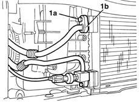
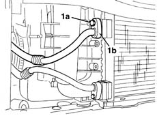
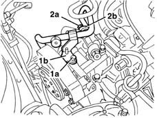
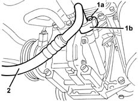
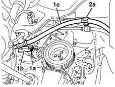
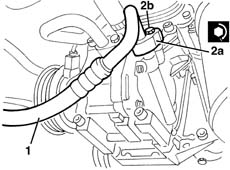
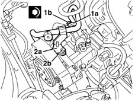
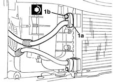
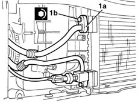

5040A50 pipe from compressor to air conditioner condenser - r+r
- Path
- Procedures > 50 AUXILIARY UNITS > 5040 AIR CONDITIONING CASING AND COMPONENTS > 5040A air conditioner coolant circuit > 5040A50 pipe from compressor to air conditioner condenser - r+r
- Kind
- repair procedure (removal / refitting; the operation number is the code)
- Applies to
- all engines; all production periods
- Interactive page
- https://sloeber94.github.io/elrnDB-lYpsln/en/#/2429309
Applies to: all engines; all production periods
Applies to: all engines; all production periods
Applies to: engines: 1.2 8v, 1.2 16v, 1.4 16v; all production periods
 Removing
Removing
 Refitting
RefittingPlace the vehicle on a lift.
Drain the coolant ( 0010T84 coolant for air conditioning system dehydrate and recharge ).
7055B91 Right front WHEEL ARCH LINER - R.R.
7055B66 Engine compartment DUST SHIELD protection in right front wheel arch - R.R.
1. Undo the bolt (1a) and disconnect the connector (1b) for the pipe from the compressor to the condenser.

Applies to: engines: 1.3 JTD; all production periods
Removing
RefittingPlace the vehicle on a lift.
Drain the coolant ( 0010T84 coolant for air conditioning system dehydrate and recharge ).
1. Undo the bolt (1a) and disconnect the connector (1b) for the pipe from the compressor to the condenser.

Applies to: engines: 1.2 8v, 1.2 16v, 1.4 16v; all production periods
1. Undo the bolt (1a) releasing the bracket (1b ).
2. Undo the bolt (2a) and disconnect the connector (2b) for the pipe from the compressor to the condenser.

Applies to: engines: 1.3 JTD; all production periods
1. Undo the bolt (1a) and disconnect the connector (1b) for the pipe from the compressor to the condenser.
2. Remove the pipe

Applies to: engines: 1.2 8v, 1.2 16v, 1.4 16v; all production periods
Raise the car.
1. Working via the right front wheel arch, undo the bolt (1a) releasing the bracket (1b) supporting the pipe (1c) from the compressor to the condenser.
2. Remove the pipe from the compressor to the condenser (1b) after having released it from the retainer (2a).
3. If necessary, release the pipe (1c) from the bracket (1b).

Applies to: engines: 1.3 JTD; all production periods
Refitting
RemovingCheck that the pipe between the compressor and the condenser is not damaged and that there are no cracks which would affect the seal.
1. Position the pipe from the compressor to the condenser.
2. Connect the connector (2a) for the pipe from the compressor to the condenser, compressor side and secure it by tightening the bolt (2b) to the recommended torque.
 | Fastening | Component | Ø | Value (daNm) |
|---|---|---|---|---|
2b | Bolt | COOLANT SYSTEM FITTINGS | M6 | 0.9 |

Applies to: engines: 1.2 8v, 1.2 16v, 1.4 16v; all production periods
Refitting
RemovingCheck that the pipe between the compressor and the condenser is not damaged and that there are no cracks which would affect the seal.
If removed, fit the bracket on the pipe.
Place the pipe between the compressor and the condenser in position, then fit it on the retainer.
Tighten the pipe mounting bracket in position.
Lower the vehicle.
1. Connect the connector (1a) for the pipe from the compressor to the condenser, compressor side and fasten it by tightening the bolt (1b) to the recommended torque.
| Fastening | Component | Ø | Value (daNm) |
|---|---|---|---|---|
1b | Bolt | COOLANT SYSTEM FITTINGS | M6 | 0.9 |
2. Fasten the bracket (2a) using the bolt (2b).

Applies to: engines: 1.3 JTD; all production periods
1. Connect the connector (1a) for the pipe from the compressor to the condenser, condensser side and fasten it tightening the bolt (1b) to the recommended torque.
| Fastening | Component | Ø | Value (daNm) |
|---|---|---|---|---|
1b | Bolt | COOLANT SYSTEM FITTINGS | M6 | 0.9 |

Applies to: engines: 1.2 8v, 1.2 16v, 1.4 16v; all production periods
1. Connect the connector (1a) for the pipe from the compressor to the condenser, condensser side and fasten it tightening the bolt (1b) to the recommended torque.
| Fastening | Component | Ø | Value (daNm) |
|---|---|---|---|---|
1b | Bolt | COOLANT SYSTEM FITTINGS | M6 | 0.9 |

Applies to: engines: 1.3 JTD; all production periods
Repressurize using coolant fluid ( 0010T84 coolant for air conditioning system dehydrate and recharge ).
Remove the vehicle from the lift.
Applies to: engines: 1.2 8v, 1.2 16v, 1.4 16v; all production periods
7055B66 Engine compartment DUST SHIELD protection in right front wheel arch - R.R.
7055B91 Right front WHEEL ARCH LINER - R.R.
Repressurize using coolant fluid ( 0010T84 coolant for air conditioning system dehydrate and recharge ).
Remove the vehicle from the lift.
Topics linked from this page (5)
- 0010T84 coolant for air conditioning system dehydrate and recharge
- 4450B04 right front wheel r r
- 7055B66 Engine compartment DUST SHIELD protection in right front wheel arch - R.R.
- 7055B91 Right front WHEEL ARCH LINER - R.R.
- 7210E10 R.R. FRONT BUMPER